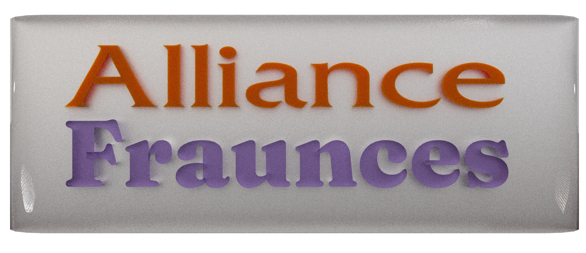

Typography
Typography is voice. The way your words are designed is a utility that depicts the voice behind them. These details seem minute, but every conscious decision you make sculpts your brand's identity and adds up to a real difference. Our job as designers is to integrate this into the world around us as a seamless blend. You don't have to understand why it looks good, it's just the way it feels.
Understanding the intention behind the design will dictate your font choices.

Opposites attract. As Flux Academy educates, there should really only be 2-3 fonts a project. They should have enough opposing features to be able to distinguish the two from each other. Some common and powerful oppositions include font width, shape, and characteristics.
Color and Design
Typography is just one piece of the design puzzle- one very important thing every design has to take into consideration is color. It too shapes your brand's recognition, and like typography, you need good legibility and visual appeal in order to use color to its fullest potential. Flux Academy talks about color psychology as well- Certain colors can evoke certain reactions out of people, whether this is due to personal experience, people telling them that's how they should feel, or reinforced stereotypes that are used in popular media. The feelings and emotions that people feel seeing a color play a critical role in branding, marketing, and sales.